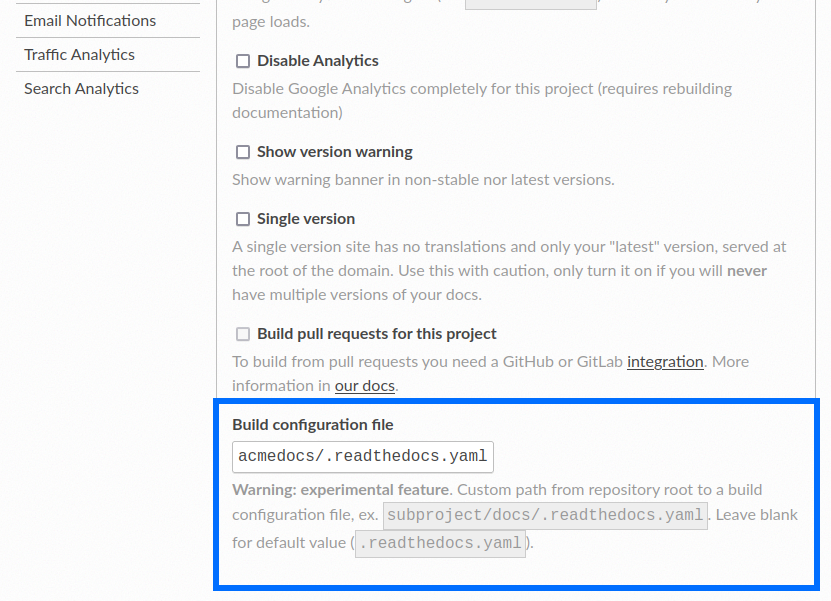

How to use a .readthedocs.yaml file in a sub-folder
This guide shows how to configure a Read the Docs project to use a custom path for the .readthedocs.yaml build configuration.
Monorepos that have multiple documentation projects in the same Git repository can benefit from this feature.
By default,
Read the Docs will use the .readthedocs.yaml at the top level of your Git repository.
But if a Git repository contains multiple documentation projects that need different build configurations,
you will need to have a .readthedocs.yaml file in multiple sub-folders.
也參考
- sphinx-multiproject
If you are only using Sphinx projects and want to share the same build configuration, you can also use the
sphinx-multiprojectextension.- How to use custom environment variables
You might also be able to reuse the same configuration file across multiple projects, using only environment variables. This is possible if the configuration pattern is very similar and the documentation tool is the same.
Implementation considerations
This feature is currently project-wide. A custom build configuration file path is applied to all versions of your documentation.
警告
Changing the configuration path will apply to all versions. Different versions of the project may not be able to build again if this path is changed.
Adding an additional project from the same repository
Once you have added the first project from the Import Wizard, you will need to repeat this process again to add the additional project from the same repository.
Setting the custom build configuration file
Once you have added a Git repository to a project that needs a custom configuration file path, navigate to and add the path to the Build configuration file field.
After pressing Save, you need to ensure that relevant versions of your documentation are built again.
小訣竅
Having multiple different build configuration files can be complex. We recommend setting up 1-2 projects in your Monorepo and getting them to build and publish successfully before adding additional projects to the equation.
Next steps
Once you have your monorepo pattern implemented and tested and it's ready to roll out to all your projects, you should also consider the Read the Docs project setup for these individual projects.
Having individual projects gives you the full flexibility of the Read the Docs platform to make individual setups for each project.
For each project, it's now possible to configure:
Sets of maintainers (or organizations on Read the Docs for Business)
Additional documentation tools with individual build processes: One project might use Sphinx, while another project setup might use Asciidoctor.
...and much more. All settings for a Read the Docs project is available for each individual project.
也參考
- Managing subprojects
More information on nesting one project inside another project. In this setup, it is still possible to use the same monorepo for each subproject.
Other tips
For a monorepo, it's not desirable to have changes in unrelated sub-folders trigger new builds.
Therefore,
you should consider setting up conditional build cancellation rules.
The configuration is added in each .readthedocs.yaml,
making it possible to write one conditional build rules per documentation project in the Monorepo 💯️